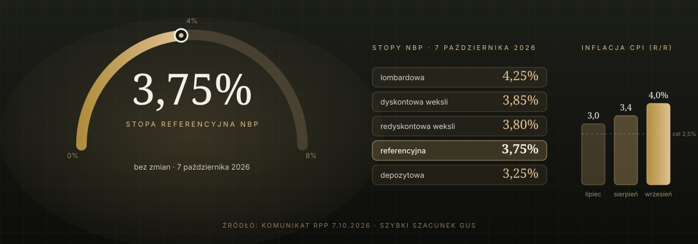

Polityka pieniężna · komunikat RPP · 7 października 2026
Stopy stoją na 3,75%, inflacja skoczyła do 4%. Na tani kredyt trzeba będzie poczekać.
Rada Polityki Pieniężnej nie zmieniła stóp procentowych i nie zapowiedziała obniżek. Dla rynku gruntów to wiadomość ważniejsza, niż się wydaje – wyjaśniamy, dlaczego.

- Stopa referencyjna NBP: 3,75% – bez zmian (lombardowa 4,25%, depozytowa 3,25%, redyskontowa 3,80%, dyskontowa 3,85%).
- Inflacja CPI we wrześniu: 4,0% r/r wobec 3,4% w sierpniu – głównie przez paliwa. Inflacja bazowa (bez żywności i energii) lekko spadła.
- Rada nie zapowiada obniżek: kolejne decyzje „będą zależne od napływających informacji”, a głównym ryzykiem są ceny surowców i sytuacja na Bliskim Wschodzie.
- Dla rynku gruntów: koszt kredytu dla kupujących mieszkania i dla deweloperów zostaje na obecnym poziomie co najmniej do końca roku. Popyt jest, ale nie będzie dodatkowego paliwa z tańszego pieniądza.
Co zdecydowała Rada
Na posiedzeniu 6–7 października 2026 r. Rada Polityki Pieniężnej utrzymała wszystkie stopy procentowe NBP na dotychczasowym poziomie. Stopa referencyjna – ta, od której zależy WIBOR, a więc oprocentowanie większości kredytów hipotecznych i deweloperskich – wynosi 3,75% i stoi na tym poziomie od marca. Lombardowa to 4,25%, depozytowa 3,25%, redyskontowa weksli 3,80%, dyskontowa weksli 3,85%.
Uzasadnienie jest krótkie i konkretne. Według szybkiego szacunku GUS inflacja CPI wzrosła we wrześniu do 4,0% r/r z 3,4% w sierpniu, a główną przyczyną był wzrost cen paliw. Rada zaznacza jednocześnie, że inflacja po wyłączeniu cen żywności i energii „nieco się obniżyła” – czyli presja cenowa wewnątrz gospodarki słabnie, a skok wynika z czynników zewnętrznych. Gospodarka jest w dobrej kondycji: w sierpniu rosły sprzedaż detaliczna oraz produkcja przemysłowa i budowlano-montażowa, choć zatrudnienie w firmach dalej spada, a dynamika płac wyhamowała.
Czego Rada nie powiedziała – i dlaczego to ważne
W komunikacie nie ma ani słowa o obniżkach. Jest za to zdanie, które warto zapamiętać: dalsze decyzje „będą zależne od napływających informacji dotyczących perspektyw inflacji i aktywności gospodarczej”, a szczególnie istotna jest „sytuacja makroekonomiczna w otoczeniu polskiej gospodarki, w tym kształtowanie się cen surowców i inflacji na świecie w kontekście zmieniającej się sytuacji geopolitycznej”. Jako ryzyka Rada wymienia też politykę fiskalną, regulacje cen energii i dynamikę płac.
Innymi słowy: dopóki konflikt na Bliskim Wschodzie podbija ceny ropy, a inflacja idzie w górę, Rada nie ma powodu, by ciąć stopy. Rynek odczytuje to podobnie – przed wrześniowym posiedzeniem analitycy nie wyceniali już obniżki w tym roku, a część banków przesuwała oczekiwane cięcia na połowę 2027 r.
Co to znaczy dla kupujących mieszkania – czyli dla popytu na grunty
Koszt kredytu zostaje tam, gdzie jest. To nie jest zła wiadomość – przy 3,75% rynek kredytowy i tak odżył: w Poznaniu w II kwartale liczba nowych kredytów mieszkaniowych wzrosła o 48% rok do roku (pisaliśmy o tym w omówieniu raportu NBP o rynku poznańskim). Ten popyt nie zniknie. Nie dostanie jednak dodatkowego impulsu w postaci tańszego pieniądza, na który część kupujących czekała. Dla deweloperów oznacza to planowanie sprzedaży na dzisiejszych, a nie przyszłych, warunkach finansowania.
Co to znaczy dla deweloperów – czyli dla ceny, jaką zapłacą za działkę
Deweloper kupując grunt liczy wstecz: od ceny sprzedaży mieszkań odejmuje koszt budowy, koszty finansowania i swoją marżę – to, co zostaje, może zapłacić za ziemię. Koszt finansowania zależy wprost od stóp. Przy stopach stojących w miejscu i inflacji 4% ta pozycja w rachunku nie spadnie, a koszty budowy raczej nie staną. W efekcie deweloperzy będą ostrożniej wyceniać grunty – zwłaszcza duże tereny pod wielorodzinną zabudowę, gdzie kapitał jest zamrożony najdłużej.
Jest i druga strona: skoro deweloperzy nie mogą liczyć na tańszy kredyt ani na szybkie podwyżki cen mieszkań, premiują działki, które skracają czas inwestycji – z obowiązującym planem miejscowym, z mediami w zasięgu, bez skomplikowanego stanu prawnego. Każdy miesiąc oszczędzony na procedurach to realne pieniądze w koszcie finansowania. Taka działka jest dziś warta relatywnie więcej niż rok temu, gdy wszyscy liczyli na szybkie cięcia stóp.
Co to znaczy dla właściciela działki
Jeśli grunt ma być sprzedany deweloperowi, nie ma co czekać na „lepsze stopy” – w świetle komunikatu nie przyjdą one szybko, a inflacja 4% w międzyczasie zjada wartość pieniądza, który dostaniesz. Lepiej skupić się na tym, co podnosi cenę niezależnie od RPP: uporządkowanym stanie prawnym, potwierdzeniu przeznaczenia w planie (albo strefy w nowym planie ogólnym gminy), dostępie do drogi i mediów. Jeśli z kolei sam planujesz budować, warunki finansowania są przewidywalne – nie będą tańsze, ale też nic nie wskazuje, by miały być droższe.
- Stopy 3,75% zostają z nami co najmniej do końca roku. Rada nie zapowiada obniżek, a inflacja 4% i ropa dają jej argumenty, by czekać.
- Popyt na mieszkania nie dostanie dodatkowego paliwa – ale też nie zgaśnie. Deweloperzy sprzedają przy obecnym koszcie kredytu i w tym rachunku kupują grunty.
- Premia za „gotową” działkę rośnie. Gdy pieniądz nie tanieje, liczy się czas – plan, media i czysty stan prawny są warte więcej niż obietnica lepszej koniunktury.
Sprawdź, czy Twoja działka ma plan, media i dostęp do drogi: Bezpłatny raport o działce →